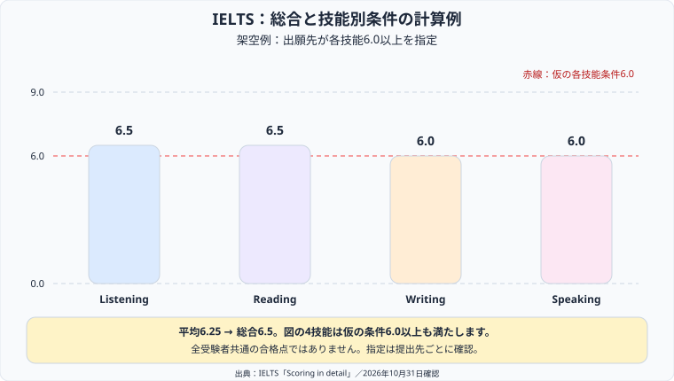

IELTSの準備は、受験する種類と提出先の条件を確認するところから始めましょう。会計分野の学習で取り組んだ計画と記録の考え方をもとに、公式情報と練習案を分けて整理します。
この記事で整理した内容から、次の学習で確認することを1つ選び、記録に残してみてください。
IELTSはListening・Reading・Writing・Speakingの4技能を測る英語試験です。このページでは主にAcademicの形式を扱います。Academic、General Training、UKVIなどのどれが必要かは、大学・雇用主・申請機関の最新の条件で確認してください。
| 項目 | IELTS | TOEIC L&R 国内公開テスト |
|---|---|---|
| 評価技能 | 4技能（L・R・W・S） | 2技能（L・R）。Speaking & Writingは別試験 |
| スコア | 0〜9バンド。技能別と総合を表示 | 各5〜495点、合計10〜990点 |
| 受験形式 | 日本英語検定協会の紙版は2026年6〜8月に順次終了。現在はコンピューター受験を案内 | 紙のマークシート |
| 受験料の確認範囲 | 英検協会のコンピューター版Academic／General Trainingは29,700円（税込）。2026年9月1日以降の申込に適用 | 通常は紙の公式認定証あり7,810円／なし7,700円（税込） |
IELTSの料金は申込先・会場・テスト種類の条件を確認してください。上表の29,700円をすべての実施団体やUKVIの共通料金とは扱っていません。会場によって別の運営団体の料金が案内される場合もあります。IELTSのSpeakingは試験官との対面形式です。
出典：日本英語検定協会「IELTSテスト概要」／日本英語検定協会「IELTS よくあるご質問」／IIBC「受験までの流れ・受験料」／IELTS「Academic format: Speaking」（2026年10月31日確認）
IELTS公式の説明では、次のように英語使用者の段階を表します。英検・TOEICの点数への単純な換算表や、大学・ビザに共通の必要点数ではありません。
| バンド | 公式の呼称 | 説明の要旨 |
|---|---|---|
| 5 | Modest user | 全体的な意味を捉えられる一方、誤りが多く、言語運用は部分的 |
| 6 | Competent user | 不正確さや誤解はあるが、おおむね効果的に言語を使用できる |
| 7 | Good user | 時に誤りはあるが、複雑な言語や詳細な論理を扱える |
| 8 | Very good user | 適切で正確かつ流暢に使え、まれに不正確さがある |
総合バンドは4技能の平均を最も近い整数または0.5に丸めます。平均の端数が.25なら次の0.5に、.75なら次の整数に切り上げます。たとえば6.5・6.5・6.0・6.0は平均6.25で総合6.5です。日本人平均の旧記載は年度・対象集団を確認できなかったため削除しました。
出典：IELTS「Scoring in detail」／British Council「How is IELTS assessed?」（2026年10月31日確認）
他試験のスコアから必要勉強時間を一律に換算できる根拠は、今回の確認では得られませんでした。「何時間で6.0に届く」とはせず、現行形式の課題を試して技能ごとの改善点を記録してください。
出典：IELTS「Academic sample test questions」（2026年10月31日確認）

図は出願先が「各技能6.0以上」を指定したと仮定した架空の例です。図の4技能はこの仮の条件を満たします。IELTS共通の合格点ではなく、技能別条件があるかどうかも提出先ごとに確認します。
約30分、4パート・計40問です。前半は日常場面、後半は教育・学術場面で、会話と独話が含まれます。音声は1回流れ、英国だけでなく、オーストラリア・ニュージーランド・北米などのアクセントも使用されます。
出典：IELTS「Academic format: Listening」（2026年10月31日確認）
60分・3セクション・40問、本文の総語数は2,150〜2,750語です。非専門家向けに書かれた書籍・雑誌・新聞などが素材で、すべてが専門論文というわけではありません。General TrainingはReadingの内容が異なります。
出典：IELTS「Academic format: Reading」／IELTS「Academic sample test questions」（2026年10月31日確認）
計60分で2タスクです。Task 1は図表などについて150語以上、Task 2は論点・問題などについて250語以上を書きます。公式の時間配分の案内はTask 1が約20分、Task 2が約40分。Task 2はTask 1の2倍の重みがあります。
各タスク内の採点項目は同じ重みです。課題への対応はTask 1ではTask Achievement、Task 2ではTask Responseと呼ばれ、ほかにCoherence and Cohesion、Lexical Resource、Grammatical Range and Accuracyを評価します。「文法の幅」だけでなく正確さも含みます。
出典：IELTS「Academic format: Writing」／British Council「How is IELTS assessed?」（2026年10月31日確認）
試験官と対面で11〜14分、3パートです。Part 1は身近な話題への応答、Part 2は準備1分のあと最大2分話す課題、Part 3は関連するテーマについての議論です。「必ず1分30秒以上話す」という共通ルールではありません。
流暢さと一貫性、語彙、文法の幅と正確さ、発音の4項目は同じ重み（各25%）です。流暢さだけが最重要という旧説明を訂正しました。
出典：IELTS「Academic format: Speaking」／British Council「How is IELTS assessed?」（2026年10月31日確認）
次は期間を区切る編集部の計画例です。3ヶ月で6.5に届くという保証や、全員に必要な期間を示すものではありません。
| 時期 | 取り組むこと（例） | 残す記録 |
|---|---|---|
| 1ヶ月目 | 出願条件を整理し、公式サンプルで各形式を確認する | 誤答原因・作文・録音と、使える時間 |
| 2ヶ月目 | 必要条件との差が大きい項目に重点を置き、練習と復習を繰り返す | 評価項目別の改善点 |
| 3ヶ月目 | 本番形式の時間制限で練習し、提出・受験手続きも確認する | 時間配分・残る課題・締切 |
IELTSの公式サンプルには技能別の課題、解答例・解答、Listeningのスクリプトなどが案内されています。AcademicとGeneral TrainingはReading・Writingが異なるため、自分の試験種類を選んでください。旧記事の「Cambridge 1〜18巻が唯一の公式教材」という説明は撤回しました。
出典：IELTS「Academic sample test questions」（2026年10月31日確認）
市販教材や指導サービスを追加する場合は、受けるテスト種類、現行のコンピューター形式への対応、解説の根拠、添削の評価項目を確認する提案です。教材名だけで特定バンドへの到達を保証しないようにしましょう。
「国内就職ならTOEIC一択」「海外大学ならIELTSかTOEFLが必須」と一律には決められません。提出先の公式要項に記載された試験名、種類、必要点、受験方式、有効期間で選びます。移住・就労の申請では、申請する国・制度の公式案内も確認してください。